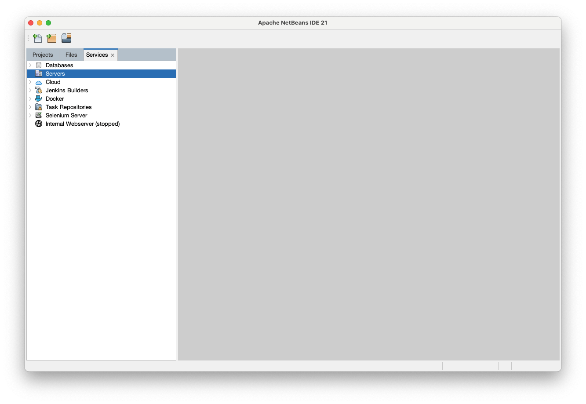

Le TP est à faire en binôme et à rendre avant le 19/03/2024 à 23h59 sur EDUNAO sous la forme d'un fichier NOM1-NOM2.zip.
Une société appelée $eMarket$ vend des produits assemblés à base de composants qu'elle achète chez des fournisseurs.
$eMarket$ souhaite vendre ses produits en ligne aux internautes. Elle souhaite que ses commerciaux puissent également gérer le catalogue en ligne. Le schéma suivant montre le principe général de l'application $eMarket$ :
L'environnement d'exécution utilisé pour l'application $eMarket$ est composé d'un serveur d'applications et d'un serveur de bases de données. Vous installerez ces deux éléments sur votre propre machine afin de pouvoir tester vos développements progressivement. Pour la programmation, vous utiliserez un IDE (environnement de développement intégré) qui vous permettra de développer les différents composants nécessaires à l'application et de déployer ces composants facilement sur les serveurs. Les étapes à réaliser sont les suivantes :
L'environnement de développement utilisé dans ce TP est composé de :
Vous devez commencer par installer un JDK (Java Development Kit) de Java Standard Edition.
L'objectif des manipulations décrites ici sont de démarrer et prendre en main NetBeans et GlassFish de manière à obtenir un environnement de développement fonctionnel. La prise en main du serveur de bases de données sera vue plus tard.
NetBeans dispose nativement d'une interface d'interaction avec le serveur d'application GlassFish. C'est cette interface que nous allons utiliser le plus souvent.

Vous pouvez observer que deux onglets sont apparus dans la fenêtre Output de Netbeans:
L'onglet GlassFish Server vous donne des informations sur l'état d'avancement du lancement du serveur.
C'est également dans cet onglet que seront affichées les erreurs rencontrées
lors de l'exécution des applications déployées sur le serveur.
L'onglet Java DB Database Process contient les affichages générés par le serveur de bases de données Java DB
qui est automatiquement installé avec GlassFish.
Cette console d'administration permet de réaliser les opérations de configuration et de maintenance du serveur d'application.
NetBeans est basé sur la notion de projet. Un projet correspond à tout ou partie d'une application que l'on souhaite développer. Il contient à la fois les sources, c'est-à-dire les fichiers contenant le code, et l'ensemble des informations de configuration de l'application. Pour ce TP, nous devons créer un projet de type Web Application dans NetBeans.
Cette dernière étape de configuration est nécessaire afin de pouvoir utiliser JavaServer Faces (JSF) pour le développement des pages web de l'application.
Les étapes qui vont vous permettre de commencer votre site sont les suivantes :
L'application de commande en ligne $eMarket$ est une application web. Elle dispose donc de plusieurs pages web liées les unes autres autres par des liens de navigation. L'objectif de cette étape est de réaliser le squelette des premières pages de l'application et de mettre en place les liens de navigations entre elles. La technologie utilisée pour l'ensemble de l'interface web est Java Server Faces (JSF).
La toute première page que voit l'utilisateur lorsqu'il utilise une application web est la page d'accueil. Il est nécessaire de définir de quelle page il s'agit pour l'application $eMarket$.
web.xml. web.xml permet notamment de définir la page qui sert de page d'accueil à l'application.
Par défaut, lors de la création du projet, NetBeans crée une page index.xhtml
dans le répertoire Web Pages
et la définit comme page d'accueil dans le fichier web.xml.
index.xhtml. "Hello from Facelets"
"Accueil de l'application eMarket".
beans.xml
contenant le code suivant
Pour vérifier que cette modification est bien prise en compte, nous allons déployer l'application et l'exécuter.
.war Les balises HTML servent à structurer le contenu d'une page web. Grâce à l'import de la bibliothèque des balises standard de HTML dans votre fichier, toutes les balises HTML existantes peuvent être utilisées pour structurer son contenu. Pour une liste des balises HTML et leur utilisation, consulter ce lien https://www.w3schools.com/html/.
h:body, jamais en dehors !
Exemple de contenu :
L'apparence donnée par le navigateur aux balises HTML est définie par un ensemble de styles CSS (Cascading Style Sheet) par défaut. Il est possible de personnaliser cette apparence en définissant des styles CSS. Pour une liste des propriétés CSS utilisables suivant les balises HTML ainsi que des exemples d'utilisation, consulter ce lien https://www.w3schools.com/css/.
monstyle.css dans le répertoire Web Pages de votre projet ;Exemple de feuille de style :
Les composants JSF de la bibliothèque standard JSF disposent d'un rendu HTML. Cela veut dire que tout composant
de cette bibliothèque peut être visualisé dans une page web.
Le principal intérêt des composants JSF c'est qu'ils permettent d'obtenir un rendu HTML pour du code Java embarqué
dans un "backing bean" (un objet Java). Ce rendu est dit "dynamique" : comme l'état du backing bean peut évoluer au
cours du temps selon le comportement défini dans ses méthodes, son rendu HTML via le composant JSF pourra donc
également varier au cours du temps.
Dans un premier temps nous n'allons utiliser que des composants simples, c'est-à-dire des composants qui ne nécessitent pas d'utiliser un backing bean.
Voici quelques exemples de composants simples :
Il est possible de personnaliser l'apparence de tous les composants JSF à l'aide de styles CSS. Trois moyens permettent de modifier l'apparence des composants JSF :
h:outputLink qui génère la balise HTML
a :
De manière simplifiée, une vue JSF est un conteneur pour les différents composants JSF d'une page.
Le composant f:view permet de définir une vue. Pour pouvoir l'utiliser il faut importer
la bibliothèque code de JSF, qui contient l'ensemble des composants non visuels (c'est-à-dire sans rendu) de JSF.
f:view doit toujours se placer juste après h:body et la balise
fermante f:view doit toujours se placer juste avant la balise fermante h:body. f:view.
Toutes les pages JSF doivent donc avoir la structure de base suivante :
L'application web $eMarket$ est constituée de plusieurs pages. L'internaute naviguera d'une page à l'autre.
catalog.xhtml destinée à afficher le catalogue des produits
disponibles à la vente ;shoppingCart.xhtml destinée à afficher le panier de l'internaute,
contenant les produits qu'il a sélectionnés pour son achat.
JSF permet de définir des règles de navigation, c'est-à-dire un ensemble de relations directionnelles entre
des pages pouvant être activées dans différents cas,
via un fichier de configuration appelé faces-config.xml.
NetBeans permet de visualiser le contenu de ce fichier sous une forme graphique ou sous une forme XML (son format réel).
Sous la forme graphique (PageFlow), les différentes pages de l'application apparaissent dans des rectangles.
Il est possible d'établir des liens de navigation en tirant des relations entre ces rectangles à partir du petit
point bleu situé sur leur droite. La figure ci-dessous montre un lien de navigation entre
la page index.xhtml et la page shoppingCart.xhtml.
Ce lien se déclenche lorsque l'événement case1 est produit
(nous allons voir juste après comment gérer
les différents événements de navigation).
"toshoppingcart" au lieu de case1.
Après avoir défini le modèle de navigation, il faut créer les différents liens permettant à l'utilisateur de déclencher
les événements correspondant aux différents liens de navigation. Pour cela, il faut utiliser
les composants JSF h:form et h:commandLink.
Ces composants permettent de créer respectivement un formulaire HTML et un lien hypertexte générant
un événement permettant de déclencher un lien de navigation.
Exemple :
index.xhtml, créer des liens vers les différentes pages de l'application en utilisant
les composants JSF h:form et h:commandLink.
catalog.xhtml et shoppingCart.xhtml, créer de la même manière des liens
permettant de retourner à la page d'accueil de l'application.
L'application de commande en ligne $eMarket$ dispose maintenant de quelques pages web et de règles de navigation, mais son contenu est purement statique. L'objectif de cette étape est de rendre le contenu des pages dynamique en utilisant des Beans, c'est-à-dire des composants Java.
Notre objectif est de peupler la page du catalogue catalog.xhtml avec des produits.
Pour le moment, nous allons faire comme si la base de données $eMarket$ n'existait pas et fonctionner avec des produits qui ne seront pas persistants (pas sauvegardés en base). Les produits seront simplement représentés par des JavaBeans. Nous verrons un peu plus tard comment gérer la persistances des produits.
Source Packages de votre projet, créer un package
Java model.Product disposant de :
Integer ;String ;Double.getX et setX pour chaque attribut X) !
Il est maintenant nécessaire de faire le lien entre la page catalog.xhtml et les objets de type
Product.
Pour cela, nous allons utiliser la notion de ManagedBean de JSF.
En effet, une propriété intéressante d'un ManagedBean est que ses attributs et ses méthodes sont accessibles et
utilisables directement dans les pages JSF (fichiers XHTML).
Source Packages de votre projet,
créer un package logic.CatalogManager dans ce package, avec un attribut permettant de stocker le catalogue,
c'est-à-dire une liste d'objets de type Product.
Vous pouvez utiliser le type ArrayList.@Named (importer le package jakarta.inject.Named;)@ApplicationScoped (importer le package jakarta.enterprise.context.ApplicationScoped;)
Une fois le ManagedBean créé, il est possible de l'utiliser dans n'importe quelle page JSF en utilisant l'EL (Expression Language).
L'Expression Language (EL) de JSF est un mini-langage qui permet d'accéder aux attributs et méthodes d'un ManagedBean depuis une page JSF.
Dans une page JSF, toute expression écrite avec l'EL est mise entre #{ et }.
Voici les règles à suivre :
"MyManagedBean",
vous devez utiliser "myManagedBean".
"get"
et avec la première lettre en minuscule. "getChoseMachin"
et d'un setter appelé "setChoseMachin",
vous devez utiliser "choseMachin" (quel que soit le nom réel de l'attribut).
Ici l'objectif est d'afficher le contenu du catalogue, donc la liste des produits,
dans la page catalog.xhtml. Le composant JSF permettant d'afficher une liste d'objets
est la DataTable.
Un exemple d'utilisation est donné ci-dessous. Dans cet exemple, le ManagedBean contient une liste d'objets de type Truc ayant
deux attributs "x" et "y" :
DataTable pour afficher l'identifiant, le nom et le prix de vente des produits
contenus dans le catalogue dans la page catalog.xhtml.Le catalogue est vide pour le moment. Nous allons donc créer quelques produits et les ajouter au catalogue.
initCatalog dans la classe CatalogManager
qui créée quelques produits et les ajoute au catalogue.
Pour que cette méthode soit appelée juste après la création du bean, il faut l'annoter @PostConstruct
(importer le package jakarta.annotation.PostConstruct;).
catalog.xhtml
en redéployant l'application sur le serveur.
L'application de commande en ligne $eMarket$ dispose maintenant de vues JSF dont le contenu est géré par des ManagedBean. L'objectif de cette étape est de permettre à l'utilisateur de modifier les données stockées dans un ManagedBean (et donc de modifier les données affichées par la vue JSF correspondante) en utilisant des formulaires.
Nous allons créer une des pages permettant de gérer le catalogue de eMarket. Cette page a pour objectif de permettre à un commercial d'ajouter un produit au catalogue.
product-create.xhtml.
index.xhtml, ajouter un lien de navigation vers product-create.xhtml.
Il pourra être intitulé Ajouter un nouveau produit au catalogue.
faces-config.xml, créer une règle de navigation allant
de la page index.xhtml à la page
product-create.xhtml.
product-create.xhtml, créer un formulaire en utilisant le tag h:form.
Donner un identifiant à ce formulaire, par exemple product-create. "h:inputText"
qui définit un champ de saisie de texte, associé au composant "h:outputLabel" permettant d'associer un titre au champ.
"value" vide. Les champs nécessaires sont :
"h:commandButton" permet de soumettre des données d'un formulaire.
Par défaut, le mode de transmission des données utilisé est le mode POST.
"action" vide pour le moment.Avec JSF, tout formulaire est associé à un ManagedBean chargé de récupérer les valeurs saisies par l'utilisateur et de les traiter. Pour cela, il a deux règles à respecter :
"value" du champ doit référencer l'attribut correspondant du bean via l'EL.
"action" du bouton doit référencer la méthode correspondante du bean via l'EL.
Ici, comme le catalogue est stocké dans le bean "CatalogManager", c'est donc ce bean qui va être chargé
de traiter le formulaire de création de produit.
"CatalogManager", créer les attributs et accesseurs correspondant aux champs du formulaire
de création de produit. Utiliser ces attributs du bean pour remplir les attributs "value" des champs du formulaire.
"CatalogManager", créer une méthode
"createProduct" sans argument et rendant une chaîne de caractère.
Utiliser cette méthode pour remplir l'attribut "action" du bouton de soumission du formulaire.
"createProduct", utiliser les accesseurs des attributs
correspondant aux champs du formulaire pour
créer un nouveau produit. Puis, ajouter ce produit au catalogue.
"faces-config.xml" qui va de la page
"product-create.xhtml" vers la page "catalog.xhtml".
"createProduct".
Dans les étapes suivantes, vous allez mettre des données en session et permettre à l'utilisateur de les modifier par l'intermédiaire d'un ManagedBean et de formulaires. L'exemple pris ici est la gestion du panier de l'utilisateur :
Notre objectif maintenant est de peupler la page du panier shoppingcart.xhtml
avec des produits que l'utilisateur aura sélectionnés.
Dans un premier temps nous allons volontairement ignorer le mécanisme permettant à l'utilisateur de sélectionner ces produits.
ShoppingCartItem disposant de :
Integer ;Integer ;Product ;
Il est maintenant nécessaire de faire le lien entre la page shoppingcart.xhtml et les objets de
type ShoppingCartItem. Pour cela, nous allons de nouveau utiliser la notion
de ManagedBean de JSF.
ShoppingCartManager disposant d'un attribut permettant de stocker le panier,
c'est-à-dire une liste d'objets de type ShoppingCartItem. ArrayList. N'oubliez pas d'initialiser cette liste
dans le constructeur, et de créer les accesseurs correspondants.
@Named (importer le package jakarta.inject.Named;)@SessionScoped (importer le package jakarta.enterprise.context.SessionScoped;)DataTable pour afficher la quantité et le nom du produit
de chacun des elements contenus dans le panier
(il n'est pas nécessaire d'afficher l'identifiant de l'élément, qui servira uniquement pour la persistance).
"initCart"
annotée @PostConstruct dans
le ShoppingCartManager.
Pour que l'utilisateur puisse ajouter un produit au panier, il doit disposer d'un bouton situé à côté de chaque
produit listé dans la page catalog.xhtml. Ce bouton a pour objectif de soumettre
un formulaire désignant le produit sélectionné. Le code appelé lors de la soumission
du formulaire ajoute alors le produit sélectionné au panier.
C'est le "ShoppingCartManager" qui doit être chargé de récupérer et traiter le formulaire.
Pour cela, il doit disposer d'une méthode qui va être appelée lors de la soumission du formulaire.
"ShoppingCartManager", ajouter une méthode "addToCart"
sans argument ayant pour type de retour une chaîne de caractères. Nous verrons son contenu un peu plus loin
catalog.xhtml"h:commandButton" dont
l'action doit être un appel à la méthode "addToCart" du ShoppingCartManager.
Le formulaire doit désigner le produit sélectionné par l'utilisateur.
Ce produit sera récupéré par le "ShoppingCartManager". Il faut donc créer un attribut pour cela.
ShoppingCartManager, créer un attribut "prodToAdd"
avec les accesseurs correspondants.
C'est cet attribut qui va recevoir le produit à ajouter dans le panier lors de la soumission du formulaire.
Il faut maintenant donner une valeur à "prodToAdd" dans le formulaire.
Nous savons que, pour chaque ligne de la DataTable, le produit courant est stocké par la variable
d'itération "var" de la table et c'est la valeur de cette variable qui désigne le produit choisi
par l'utilisateur et que nous devons récupérer pour l'ajout dans le panier. Une première approche consiste
donc à placer la valeur de cette variable dans un champ de formulaire (un champ caché par exemple).
Cela donne quelque-chose comme :
Malheureusement, cette approche n'est pas utilisable dans notre cas car l'attribut "value"
d'un champ de formulaire doit toujours pointer sur un attribut du ManagedBean qui va traiter le formulaire.
En effet, cet attribut reçoit automatiquement la valeur saisie par l'utilisateur lors de la soumission du formulaire.
Or ici #{item} est la variable qui est gérée par le composant JSF DataTable qui
est associé au CatalogManager. Elle ne peut donc pas recevoir sa propre valeur,
et qui plus est elle se trouve dans le CatalogManager
et non dans le ShoppingCartManager !
Ce que l'on cherche à faire est donc récupérer la valeur de "#{item}" pour pouvoir la stocker
dans un attribut du ShoppingCartManager. Pour cela, il faut utiliser
un "setPropertyActionListener".
Son rôle est de s'assurer qu'un attribut d'un ManagedBean, noté "target" reçoit une valeur donnée
notée "value" avant la soumission du formulaire :
"setPropertyActionListener" pour donner à l'attribut "prodToAdd"
la valeur de la variable d'itération de la table des produits.
Dans la méthode "addToCart" du ShoppingCartManager, il est maintenant possible
de récupérer le produit sélectionné par l'utilisateur puisqu'il se trouve dans
l'attribut "prodToAdd". Il faut ensuite l'ajouter au panier, puis émettre un outcome
de navigation afin de rediriger l'utilisateur vers la page du panier.
"addToCart", créer un nouvel objet de type ShoppingCartItem
à partir du produit
se trouvant dans "prodToAdd" et d'une quantité égale à 1.
Puis ajouter cet item à la liste des items du panier.
faces-config.xml une règle de navigation allant
de la vue catalog.xhtml à la vue shoppingcart.xhtml.
"addToCart".
Vous pouvez ensuite améliorer cette gestion de panier en implémentant des fonctionnalités telles que :
Dans cette étape, vous allez connecter votre application à la base de données, utiliser les données qui se trouvent dans la base et également modifier le contenu de la base :